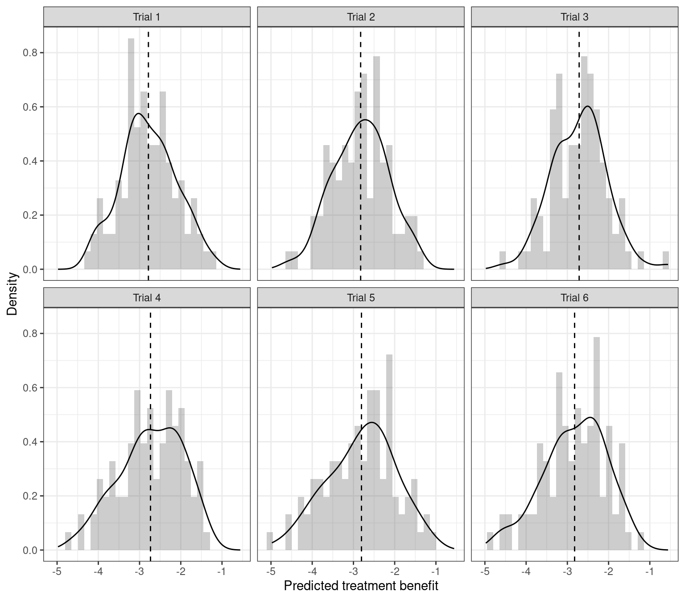

library(bipd)
ds <- generate_ipdma_example(type = "continuous")9 Prediction of individual treatment effect using data from multiple studies
Orestis Efthimiou ![]()
In this chapter, we discuss statistical methods for developing models to predict patient-level treatment effects using data from multiple randomized and non-randomized studies. We will first present prediction models that assume a constant treatment effect and discuss how to address heterogeneity in baseline risk. Subsequently, we will discuss approaches that allow for treatment effect modification by adopting two different approaches in an IPD-MA context, namely the risk modelling and the effect modelling approach. For both approaches, we will first discuss how to combine IPD from RCTs comparing the same two treatments. We will then discuss how these methods can be extended to include randomized data from multiple treatments, real-world data, and published aggregate data. We will discuss statistical software to implement these approaches and provide example code as supporting information. Real examples will be used throughout to illustrate the main methods.
9.1 Estimating heterogeneous treatment effects in pairwise meta-analysis
We hereby provide code for estimating patient-level treatment effects for the case when we have patient-level data from multiple randomized trials.
9.1.1 Example of a continuous outcome
9.1.1.1 Setup
We start by simulating an artificial dataset using the R package bipd:
Let us have a look at the dataset:
head(ds) studyid treat z1 z2 y
1 1 0 -1.0250374 0.49359495 11
2 1 0 1.3634580 -0.06700193 11
3 1 1 -1.0207586 -0.41125330 8
4 1 0 0.1811554 1.35029464 11
5 1 0 0.7933182 -0.82219469 11
6 1 1 -0.1877892 1.71953547 10The simulated dataset contains information on the following variables:
- the trial indicator
studyid - the treatment indicator
treat, which takes the values 0 for control and 1 for active treatment - two prognostic variables
z1andz2 - the continuous outcome
y
| 0 (N=305) |
1 (N=295) |
Overall (N=600) |
|
|---|---|---|---|
| z1 | |||
| Mean (SD) | 0.118 (1.06) | 0.0136 (1.07) | 0.0664 (1.07) |
| Median [Min, Max] | 0.0748 [-2.75, 3.05] | -0.0745 [-3.21, 2.67] | -0.00441 [-3.21, 3.05] |
| z2 | |||
| Mean (SD) | 0.0401 (1.05) | -0.0362 (1.05) | 0.00259 (1.05) |
| Median [Min, Max] | 0.0341 [-3.17, 2.52] | -0.106 [-2.84, 2.93] | -0.00570 [-3.17, 2.93] |
| studyid | |||
| 1 | 51 (16.7%) | 49 (16.6%) | 100 (16.7%) |
| 2 | 46 (15.1%) | 54 (18.3%) | 100 (16.7%) |
| 3 | 58 (19.0%) | 42 (14.2%) | 100 (16.7%) |
| 4 | 52 (17.0%) | 48 (16.3%) | 100 (16.7%) |
| 5 | 50 (16.4%) | 50 (16.9%) | 100 (16.7%) |
| 6 | 48 (15.7%) | 52 (17.6%) | 100 (16.7%) |
9.1.1.2 Model fitting
We synthesize the evidence using a Bayesian random effects meta-analysis model. The model is given in Equation 16.7 of the book. First we need set up the data and create the model:
ipd <- with(ds, ipdma.model.onestage(y = y, study = studyid, treat = treat,
X = cbind(z1, z2),
response = "normal",
shrinkage = "none"),
type = "random")The JAGS model can be accessed as follows:
ipd$model.JAGSfunction ()
{
for (i in 1:Np) {
y[i] ~ dnorm(mu[i], sigma)
mu[i] <- alpha[studyid[i]] + inprod(beta[], X[i, ]) +
(1 - equals(treat[i], 1)) * inprod(gamma[], X[i,
]) + d[studyid[i], treat[i]]
}
sigma ~ dgamma(0.001, 0.001)
for (j in 1:Nstudies) {
d[j, 1] <- 0
d[j, 2] ~ dnorm(delta[2], tau)
}
sd ~ dnorm(0, 1)
T(0, )
tau <- pow(sd, -2)
delta[1] <- 0
delta[2] ~ dnorm(0, 0.001)
for (j in 1:Nstudies) {
alpha[j] ~ dnorm(0, 0.001)
}
for (k in 1:Ncovariate) {
beta[k] ~ dnorm(0, 0.001)
}
for (k in 1:Ncovariate) {
gamma[k] ~ dnorm(0, 0.001)
}
}
<environment: 0x55f3d7563230>We can fit the treatment effect model as follows:
samples <- ipd.run(ipd, n.chains = 2, n.iter = 20,
pars.save = c("alpha", "beta", "delta", "sd", "gamma"))
trtbenefit <- round(treatment.effect(ipd, samples, newpatient = c(z1 = 1, z2 = 0.5)), 2)Here are the estimated model parameters:
summary(samples)
Iterations = 2001:2020
Thinning interval = 1
Number of chains = 2
Sample size per chain = 20
1. Empirical mean and standard deviation for each variable,
plus standard error of the mean:
Mean SD Naive SE Time-series SE
alpha[1] 10.9960 0.05395 0.008531 0.008659
alpha[2] 8.0128 0.06688 0.010574 0.027179
alpha[3] 10.4861 0.06265 0.009906 0.019822
alpha[4] 9.6116 0.05038 0.007966 0.005723
alpha[5] 12.9818 0.06611 0.010453 0.024653
alpha[6] 15.7881 0.04879 0.007714 0.014535
beta[1] 0.2074 0.02240 0.003541 0.006507
beta[2] 0.3182 0.02080 0.003289 0.002725
delta[1] 0.0000 0.00000 0.000000 0.000000
delta[2] -2.8673 0.33747 0.053358 0.044544
gamma[1] -0.5104 0.03078 0.004867 0.008095
gamma[2] 0.6115 0.02872 0.004540 0.005747
sd 1.2001 0.29377 0.046449 0.074224
2. Quantiles for each variable:
2.5% 25% 50% 75% 97.5%
alpha[1] 10.9094 10.9647 10.9963 11.0314 11.0917
alpha[2] 7.8449 7.9806 8.0190 8.0527 8.1253
alpha[3] 10.3921 10.4448 10.4757 10.5228 10.6150
alpha[4] 9.5296 9.5771 9.6120 9.6366 9.7109
alpha[5] 12.8548 12.9223 12.9905 13.0374 13.0757
alpha[6] 15.7023 15.7617 15.7954 15.8139 15.8952
beta[1] 0.1693 0.1956 0.2077 0.2188 0.2519
beta[2] 0.2801 0.3045 0.3195 0.3319 0.3509
delta[1] 0.0000 0.0000 0.0000 0.0000 0.0000
delta[2] -3.5471 -3.0718 -2.8557 -2.5993 -2.3507
gamma[1] -0.5667 -0.5288 -0.5201 -0.4838 -0.4601
gamma[2] 0.5615 0.5900 0.6106 0.6335 0.6549
sd 0.7871 0.9995 1.1971 1.3740 1.80539.1.1.3 Prection
We can now predict the individualized treatment effect for a new patient with covariate values z1 = 1 and z2 = 0.5.
round(treatment.effect(ipd, samples, newpatient = c(z1 = 1, z2 = 0.5)), 2)0.025 0.5 0.975
-3.70 -3.00 -2.48 This means that the predicted outcome for patient with covariate values z1 = 1 and z2 = 0.5 will differ by -3 units when receiving the active treatment (treat = 1) as compared to the control treatment (treat = 0).
We can also predict treatment benefit for all patients in the sample, and look at the distribution of predicted benefit.
library(dplyr)
library(ggplot2)
ds <- ds %>% mutate(benefit = NA,
study = paste("Trial", studyid))
for (i in seq(nrow(ds))) {
newpat <- as.matrix(ds[i, c("z1", "z2")])
ds$benefit[i] <- treatment.effect(ipd, samples, newpatient = newpat)["0.5"]
}
summbenefit <- ds %>% group_by(study) %>%
summarize(mediabenefit = median(benefit), meanbenefit = mean(benefit))
ggplot(ds, aes(x = benefit)) +
geom_histogram(aes(y = after_stat(density)), alpha = 0.3) +
geom_density() +
geom_vline(data = summbenefit, aes(xintercept = meanbenefit),
linewidth = 0.5, lty = 2) +
facet_wrap(~study) +
ylab("Density") +
xlab("Predicted treatment benefit") + theme_bw()
9.1.1.4 Penalization
Let us repeat the analysis, but this time while penalizing the treatment-covariate coefficients using a Bayesian LASSO prior.
ipd <- with(ds, ipdma.model.onestage(y = y, study = studyid,
treat = treat,
X = cbind(z1, z2),
response = "normal",
shrinkage = "laplace"),
type = "random")
samples <- ipd.run(ipd, n.chains = 2, n.iter = 20,
pars.save = c("alpha", "beta", "delta", "sd", "gamma"))Compiling model graph
Resolving undeclared variables
Allocating nodes
Graph information:
Observed stochastic nodes: 600
Unobserved stochastic nodes: 20
Total graph size: 6039
Initializing modelround(treatment.effect(ipd, samples, newpatient = c(1,0.5)), 2)0.025 0.5 0.975
-3.94 -2.95 -1.79 9.1.2 Example of a binary outcome
9.1.2.1 Setup
We now present the case of a binary outcome. We first generate a dataset as before, using the bipd package.
ds2 <- generate_ipdma_example(type = "binary")
head(ds2) studyid treat w1 w2 y
1 1 1 0.3085440 0.1575700 1
2 1 0 0.4926325 -0.4840050 0
3 1 1 2.5380713 -0.6867120 0
4 1 1 1.5699597 1.5699588 1
5 1 0 -1.1898302 1.0758754 0
6 1 0 -0.9250433 -0.2722173 1The simulated dataset contains information on the following variables:
- the trial indicator
studyid - the treatment indicator
treat, which takes the values 0 for control and 1 for active treatment - two prognostic variables
w1andw2 - the binary outcome
y
| 0 (N=322) |
1 (N=278) |
Overall (N=600) |
|
|---|---|---|---|
| w1 | |||
| Mean (SD) | -0.0283 (0.965) | 0.0915 (1.02) | 0.0272 (0.994) |
| Median [Min, Max] | -0.0475 [-2.69, 2.49] | 0.123 [-2.71, 2.54] | 0.0111 [-2.71, 2.54] |
| w2 | |||
| Mean (SD) | 0.0447 (0.985) | 0.00111 (0.975) | 0.0245 (0.980) |
| Median [Min, Max] | 0.0640 [-2.30, 3.02] | 0.0276 [-3.04, 2.13] | 0.0317 [-3.04, 3.02] |
| studyid | |||
| 1 | 54 (16.8%) | 46 (16.5%) | 100 (16.7%) |
| 2 | 57 (17.7%) | 43 (15.5%) | 100 (16.7%) |
| 3 | 54 (16.8%) | 46 (16.5%) | 100 (16.7%) |
| 4 | 49 (15.2%) | 51 (18.3%) | 100 (16.7%) |
| 5 | 51 (15.8%) | 49 (17.6%) | 100 (16.7%) |
| 6 | 57 (17.7%) | 43 (15.5%) | 100 (16.7%) |
9.1.2.2 Model fitting
We use a Bayesian random effects model with binomial likelihood. This is similar to the model 16.7 of the book, but with a Binomial likelihood, i.e.
\[ y_{ij}\sim \text{Binomial}(\pi_{ij}) \\ \] \[ \text{logit}(\pi_{ij})=a_j+\delta_j t_{ij}+ \sum_{l=1}^{L}\beta_l x_{ij}+ \sum_{l=1}^{L}\gamma_l x_{ij} t_{ij} \] The remaining of the model is as in the book. We can penalize the estimated parameters for effect modification (\(\gamma\)’s), using a Bayesian LASSO. We can do this using again the bipd package:
ipd2 <- with(ds2, ipdma.model.onestage(y = y, study = studyid, treat = treat,
X = cbind(w1, w2),
response = "binomial",
shrinkage = "laplace"),
type = "random", hy.prior = list("dunif", 0, 1))
ipd2$model.JAGSfunction ()
{
for (i in 1:Np) {
y[i] ~ dbern(p[i])
logit(p[i]) <- alpha[studyid[i]] + inprod(beta[], X[i,
]) + (1 - equals(treat[i], 1)) * inprod(gamma[],
X[i, ]) + d[studyid[i], treat[i]]
}
for (j in 1:Nstudies) {
d[j, 1] <- 0
d[j, 2] ~ dnorm(delta[2], tau)
}
sd ~ dnorm(0, 1)
T(0, )
tau <- pow(sd, -2)
delta[1] <- 0
delta[2] ~ dnorm(0, 0.001)
for (j in 1:Nstudies) {
alpha[j] ~ dnorm(0, 0.001)
}
for (k in 1:Ncovariate) {
beta[k] ~ dnorm(0, 0.001)
}
tt <- lambda
lambda <- pow(lambda.inv, -1)
lambda.inv ~ dunif(0, 5)
for (k in 1:Ncovariate) {
gamma[k] ~ ddexp(0, tt)
}
}
<environment: 0x55f3db4139b0>samples <- ipd.run(ipd2, n.chains = 2, n.iter = 20,
pars.save = c("alpha", "beta", "delta", "sd", "gamma"))
summary(samples)
Iterations = 2001:2020
Thinning interval = 1
Number of chains = 2
Sample size per chain = 20
1. Empirical mean and standard deviation for each variable,
plus standard error of the mean:
Mean SD Naive SE Time-series SE
alpha[1] -0.26478 0.28335 0.04480 0.05551
alpha[2] -0.41666 0.23180 0.03665 0.02909
alpha[3] -0.39071 0.21151 0.03344 0.05258
alpha[4] -0.49347 0.20642 0.03264 0.03819
alpha[5] -0.25525 0.18252 0.02886 0.02923
alpha[6] -0.41317 0.18360 0.02903 0.03677
beta[1] -0.03952 0.09834 0.01555 0.01863
beta[2] 0.15088 0.07552 0.01194 0.01427
delta[1] 0.00000 0.00000 0.00000 0.00000
delta[2] 0.21968 0.26395 0.04173 0.05528
gamma[1] -0.06718 0.09728 0.01538 0.01399
gamma[2] -0.02296 0.08799 0.01391 0.02269
sd 0.50242 0.29347 0.04640 0.12223
2. Quantiles for each variable:
2.5% 25% 50% 75% 97.5%
alpha[1] -0.69162 -0.43794 -0.26726 -0.05156 0.13615
alpha[2] -0.80799 -0.57288 -0.45067 -0.24694 -0.02281
alpha[3] -0.71852 -0.52968 -0.43582 -0.21166 -0.03799
alpha[4] -0.79019 -0.63515 -0.51543 -0.39219 -0.08663
alpha[5] -0.65705 -0.34258 -0.25473 -0.14453 0.06589
alpha[6] -0.71876 -0.53727 -0.41474 -0.26524 -0.11858
beta[1] -0.21552 -0.10699 -0.04432 0.01984 0.17738
beta[2] 0.02627 0.08576 0.13895 0.20557 0.27684
delta[1] 0.00000 0.00000 0.00000 0.00000 0.00000
delta[2] -0.19506 0.02491 0.21958 0.39657 0.69399
gamma[1] -0.31413 -0.07879 -0.03702 -0.01768 0.04176
gamma[2] -0.18747 -0.06206 -0.01492 0.01069 0.13327
sd 0.14954 0.21615 0.43839 0.72114 0.98677The predicted treatment benefit for a new patient with covariates w1 = 1.6 and w2 = 1.3 is given as:
round(treatment.effect(ipd2, samples, newpatient = c(w1 = 1.6, w2 = 1.3)), 2)0.025 0.5 0.975
0.65 1.08 1.93 In other words, the aforementioned patient 1.08 (95% Credibility Interval: 0.65 to 1.93)
9.2 Estimating heterogeous treatment effects in network meta-analysis
9.2.1 Example of a continuous outcome
9.2.1.1 Setup
We use again the bipd package to simulate a dataset:
ds3 <- generate_ipdnma_example(type = "continuous")
head(ds3) studyid treat z1 z2 y
1 1 2 -0.58562548 -0.7293231 8
2 1 1 -0.03621696 0.6291016 11
3 1 1 1.65265173 -0.8750261 11
4 1 1 2.00171606 -1.0519276 11
5 1 1 -1.06157061 0.5212684 11
6 1 1 -0.02835944 0.4339892 11Let us look into the data a bit in more detail:
| 1 (N=341) |
2 (N=348) |
3 (N=311) |
Overall (N=1000) |
|
|---|---|---|---|---|
| z1 | ||||
| Mean (SD) | -0.0264 (0.996) | -0.0351 (1.03) | 0.0866 (1.00) | 0.00572 (1.01) |
| Median [Min, Max] | -0.0520 [-3.08, 2.84] | -0.0398 [-2.68, 3.05] | 0.0133 [-3.32, 3.26] | -0.0303 [-3.32, 3.26] |
| z2 | ||||
| Mean (SD) | -0.00628 (0.962) | -0.0191 (1.01) | -0.0157 (1.04) | -0.0137 (1.00) |
| Median [Min, Max] | 0.0476 [-2.56, 2.75] | -0.0667 [-3.14, 2.46] | -0.0628 [-3.23, 3.46] | -0.00601 [-3.23, 3.46] |
| studyid | ||||
| 1 | 47 (13.8%) | 53 (15.2%) | 0 (0%) | 100 (10.0%) |
| 2 | 56 (16.4%) | 44 (12.6%) | 0 (0%) | 100 (10.0%) |
| 3 | 43 (12.6%) | 57 (16.4%) | 0 (0%) | 100 (10.0%) |
| 4 | 52 (15.2%) | 0 (0%) | 48 (15.4%) | 100 (10.0%) |
| 5 | 45 (13.2%) | 0 (0%) | 55 (17.7%) | 100 (10.0%) |
| 6 | 0 (0%) | 46 (13.2%) | 54 (17.4%) | 100 (10.0%) |
| 7 | 0 (0%) | 42 (12.1%) | 58 (18.6%) | 100 (10.0%) |
| 8 | 32 (9.4%) | 30 (8.6%) | 38 (12.2%) | 100 (10.0%) |
| 9 | 34 (10.0%) | 39 (11.2%) | 27 (8.7%) | 100 (10.0%) |
| 10 | 32 (9.4%) | 37 (10.6%) | 31 (10.0%) | 100 (10.0%) |
9.2.1.2 Model fitting
We will use the model shown in Equation 16.8 in the book. In addition, we will use Bayesian LASSO to penalize the treatment-covariate interactions.
ipd3 <- with(ds3, ipdnma.model.onestage(y = y, study = studyid, treat = treat,
X = cbind(z1, z2),
response = "normal",
shrinkage = "laplace",
type = "random"))
ipd3$model.JAGSfunction ()
{
for (i in 1:Np) {
y[i] ~ dnorm(mu[i], sigma)
mu[i] <- alpha[studyid[i]] + inprod(beta[], X[i, ]) +
inprod(gamma[treat[i], ], X[i, ]) + d[studyid[i],
treatment.arm[i]]
}
sigma ~ dgamma(0.001, 0.001)
for (i in 1:Nstudies) {
w[i, 1] <- 0
d[i, 1] <- 0
for (k in 2:na[i]) {
d[i, k] ~ dnorm(mdelta[i, k], taudelta[i, k])
mdelta[i, k] <- delta[t[i, k]] - delta[t[i, 1]] +
sw[i, k]
taudelta[i, k] <- tau * 2 * (k - 1)/k
w[i, k] <- d[i, k] - delta[t[i, k]] + delta[t[i,
1]]
sw[i, k] <- sum(w[i, 1:(k - 1)])/(k - 1)
}
}
sd ~ dnorm(0, 1)
T(0, )
tau <- pow(sd, -2)
delta[1] <- 0
for (k in 2:Ntreat) {
delta[k] ~ dnorm(0, 0.001)
}
for (j in 1:Nstudies) {
alpha[j] ~ dnorm(0, 0.001)
}
for (k in 1:Ncovariate) {
beta[k] ~ dnorm(0, 0.001)
}
lambda[1] <- 0
lambda.inv[1] <- 0
for (m in 2:Ntreat) {
tt[m] <- lambda[m] * sigma
lambda[m] <- pow(lambda.inv[m], -1)
lambda.inv[m] ~ dunif(0, 5)
}
for (k in 1:Ncovariate) {
gamma[1, k] <- 0
for (m in 2:Ntreat) {
gamma[m, k] ~ ddexp(0, tt[m])
}
}
}
<environment: 0x55f3db6ab4c8>samples <- ipd.run(ipd3, n.chains = 2, n.iter = 20,
pars.save = c("alpha", "beta", "delta", "sd", "gamma"))Compiling model graph
Resolving undeclared variables
Allocating nodes
Graph information:
Observed stochastic nodes: 1000
Unobserved stochastic nodes: 35
Total graph size: 10141
Initializing modelsummary(samples)
Iterations = 2001:2020
Thinning interval = 1
Number of chains = 2
Sample size per chain = 20
1. Empirical mean and standard deviation for each variable,
plus standard error of the mean:
Mean SD Naive SE Time-series SE
alpha[1] 10.99534 0.04944 0.007816 0.010662
alpha[2] 7.97976 0.05151 0.008144 0.009861
alpha[3] 10.44126 0.04455 0.007044 0.006742
alpha[4] 9.63265 0.05314 0.008402 0.015169
alpha[5] 12.80789 0.04337 0.006857 0.009947
alpha[6] 13.10793 0.05194 0.008212 0.014386
alpha[7] 7.42342 0.03885 0.006142 0.009881
alpha[8] 11.09641 0.04057 0.006414 0.009031
alpha[9] 10.09190 0.05934 0.009382 0.010856
alpha[10] 9.20245 0.05088 0.008044 0.013538
beta[1] 0.19888 0.01488 0.002352 0.005494
beta[2] 0.32908 0.01677 0.002652 0.005854
delta[1] 0.00000 0.00000 0.000000 0.000000
delta[2] -2.95250 0.03362 0.005316 0.005333
delta[3] -1.11629 0.04667 0.007379 0.014658
gamma[1,1] 0.00000 0.00000 0.000000 0.000000
gamma[2,1] -0.61115 0.02507 0.003963 0.007741
gamma[3,1] -0.29809 0.02267 0.003585 0.007344
gamma[1,2] 0.00000 0.00000 0.000000 0.000000
gamma[2,2] 0.58568 0.02548 0.004029 0.006822
gamma[3,2] 0.41651 0.02459 0.003887 0.006797
sd 0.07894 0.03147 0.004976 0.007731
2. Quantiles for each variable:
2.5% 25% 50% 75% 97.5%
alpha[1] 10.91186 10.96479 10.98757 11.0358 11.0780
alpha[2] 7.88207 7.94564 7.98290 8.0078 8.0832
alpha[3] 10.34906 10.41524 10.43860 10.4739 10.5233
alpha[4] 9.51890 9.59978 9.63523 9.6703 9.7067
alpha[5] 12.73284 12.78053 12.81198 12.8463 12.8846
alpha[6] 13.02121 13.06565 13.10716 13.1477 13.1969
alpha[7] 7.35202 7.39341 7.42084 7.4507 7.4935
alpha[8] 11.03713 11.06940 11.08430 11.1219 11.1777
alpha[9] 9.97948 10.04921 10.08597 10.1286 10.1887
alpha[10] 9.12155 9.16920 9.20311 9.2335 9.3087
beta[1] 0.17041 0.19042 0.20031 0.2083 0.2241
beta[2] 0.30087 0.31601 0.32796 0.3422 0.3562
delta[1] 0.00000 0.00000 0.00000 0.0000 0.0000
delta[2] -2.99962 -2.97157 -2.95677 -2.9358 -2.8790
delta[3] -1.17731 -1.16032 -1.11565 -1.0866 -1.0207
gamma[1,1] 0.00000 0.00000 0.00000 0.0000 0.0000
gamma[2,1] -0.66340 -0.62382 -0.60841 -0.5984 -0.5549
gamma[3,1] -0.35309 -0.30967 -0.29325 -0.2809 -0.2662
gamma[1,2] 0.00000 0.00000 0.00000 0.0000 0.0000
gamma[2,2] 0.52196 0.57758 0.58452 0.6017 0.6207
gamma[3,2] 0.36857 0.40146 0.41455 0.4362 0.4557
sd 0.03865 0.05792 0.06804 0.1023 0.1334As before, we can use the treatment.effect() function of bipd to estimate relative effects for new patients.
treatment.effect(ipd3, samples, newpatient= c(1,2))$`treatment 2`
0.025 0.5 0.975
-2.515622 -2.374636 -2.277547
$`treatment 3`
0.025 0.5 0.975
-0.6654101 -0.5668239 -0.4414406 This gives us the relative effects for all treatments versus the reference. To obtain relative effects between active treatments we need some more coding:
samples.all=data.frame(rbind(samples[[1]], samples[[2]]))
newpatient= c(1,2)
newpatient <- (newpatient - ipd3$scale_mean)/ipd3$scale_sd
median(
samples.all$delta.2.+samples.all$gamma.2.1.*
newpatient[1]+samples.all$gamma.2.2.*newpatient[2]
-
(samples.all$delta.3.+samples.all$gamma.3.1.*newpatient[1]+
samples.all$gamma.3.2.*newpatient[2])
)[1] -1.798048quantile(samples.all$delta.2.+samples.all$gamma.2.1.*
newpatient[1]+samples.all$gamma.2.2.*newpatient[2]
-(samples.all$delta.3.+samples.all$gamma.3.1.*newpatient[1]+
samples.all$gamma.3.2.*newpatient[2])
, probs = 0.025) 2.5%
-1.928005 quantile(samples.all$delta.2.+samples.all$gamma.2.1.*
newpatient[1]+samples.all$gamma.2.2.*newpatient[2]
-(samples.all$delta.3.+samples.all$gamma.3.1.*newpatient[1]+
samples.all$gamma.3.2.*newpatient[2])
, probs = 0.975) 97.5%
-1.658725 9.2.2 Modeling patient-level relative effects using randomized and observational evidence for a network of treatments
We will now follow Chapter 16.3.5 from the book. In this analysis we will not use penalization, and we will assume fixed effects. For an example with penalization and random effects, see part 2 of this vignettte.
9.2.2.1 Setup
We generate a very simple dataset of three studies comparing three treatments. We will assume 2 RCTs and 1 non-randomized trial:
ds4 <- generate_ipdnma_example(type = "continuous")
ds4 <- ds4 %>% filter(studyid %in% c(1,4,10)) %>%
mutate(studyid = factor(studyid) %>%
recode_factor(
"1" = "1",
"4" = "2",
"10" = "3"),
design = ifelse(studyid == "3", "nrs", "rct"))The sample size is as follows:
s1 s2 s3
treat A: 49 42 33
treat B: 51 0 34
treat C: 0 58 339.2.2.2 Model fitting
We will use the design-adjusted model, equation 16.9 in the book. We will fit a two-stage fixed effects meta-analysis and we will use a variance inflation factor. The code below is used to specify the analysis of each individual study. Briefly, in each study we adjust the treatment effect for the prognostic factors z1 and z2, as well as their interaction with treat.
library(rjags)Loading required package: codaLinked to JAGS 4.3.0Loaded modules: basemod,bugsfirst.stage <- "
model{
for (i in 1:N){
y[i] ~ dnorm(mu[i], tau)
mu[i] <- a + inprod(b[], X[i,]) + inprod(c[,treat[i]], X[i,]) + d[treat[i]]
}
sigma ~ dunif(0, 5)
tau <- pow(sigma, -2)
a ~ dnorm(0, 0.001)
for(k in 1:Ncovariate){
b[k] ~ dnorm(0,0.001)
}
for(k in 1:Ncovariate){
c[k,1] <- 0
}
tauGamma <- pow(sdGamma,-1)
sdGamma ~ dunif(0, 5)
for(k in 1:Ncovariate){
for(t in 2:Ntreat){
c[k,t] ~ ddexp(0, tauGamma)
}
}
d[1] <- 0
for(t in 2:Ntreat){
d[t] ~ dnorm(0, 0.001)
}
}"Subsequently, we estimate the relative treatment effects in the first (randomized) study comparing treatments A and B:
model1.spec <- textConnection(first.stage)
data1 <- with(ds4 %>% filter(studyid == 1),
list(y = y,
N = length(y),
X = cbind(z1,z2),
treat = treat,
Ncovariate = 2,
Ntreat = 2))
jags.m <- jags.model(model1.spec, data = data1, n.chains = 2, n.adapt = 500,
quiet = TRUE)
params <- c("d", "c")
samps4.1 <- coda.samples(jags.m, params, n.iter = 50)
samps.all.s1 <- data.frame(as.matrix(samps4.1))
samps.all.s1 <- samps.all.s1[, c("c.1.2.", "c.2.2.", "d.2.")]
delta.1 <- colMeans(samps.all.s1)
cov.1 <- var(samps.all.s1)We repeat the analysis for the second (randomized) study comparing treatments A and C:
model1.spec <- textConnection(first.stage)
data2 <- with(ds4 %>% filter(studyid == 2),
list(y = y,
N = length(y),
X = cbind(z1,z2),
treat = ifelse(treat == 3, 2, treat),
Ncovariate = 2,
Ntreat = 2))
jags.m <- jags.model(model1.spec, data = data2, n.chains = 2, n.adapt = 100,
quiet = TRUE)
params <- c("d", "c")
samps4.2 <- coda.samples(jags.m, params, n.iter = 50)
samps.all.s2 <- data.frame(as.matrix(samps4.2))
samps.all.s2 <- samps.all.s2[, c("c.1.2.", "c.2.2.", "d.2.")]
delta.2 <- colMeans(samps.all.s2)
cov.2 <- var(samps.all.s2)Finally, we analyze the third (non-randomized) study comparing treatments A, B, and C:
model1.spec <- textConnection(first.stage)
data3 <- with(ds4 %>% filter(studyid == 3),
list(y = y,
N = length(y),
X = cbind(z1,z2),
treat = treat,
Ncovariate = 2,
Ntreat = 3))
jags.m <- jags.model(model1.spec, data = data3, n.chains = 2, n.adapt = 100,
quiet = TRUE)
params <- c("d", "c")
samps4.3 <- coda.samples(jags.m, params, n.iter = 50)
samps.all.s3 <- data.frame(as.matrix(samps4.3))
samps.all.s3 <- samps.all.s3[, c("c.1.2.", "c.2.2.", "d.2.", "c.1.3.",
"c.2.3.", "d.3.")]
delta.3 <- colMeans(samps.all.s3)
cov.3 <- var(samps.all.s3)The corresponding treatment effect estimates are depicted below:
| study | B versus A | C versus A |
|---|---|---|
| study 1 | -2.954 (SE = 0.049 ) | |
| study 2 | -0.978 (SE = 0.050 ) | |
| study 3 | -2.949 (SE = 0.075 ) | -1.143 (SE = 0.074 ) |
We can now fit the second stage of the network meta-analysis. The corresponding JAGS model is specified below:
second.stage <-
"model{
#likelihood
y1 ~ dmnorm(Mu1, Omega1)
y2 ~ dmnorm(Mu2, Omega2)
y3 ~ dmnorm(Mu3, Omega3*W)
Omega1 <- inverse(cov.1)
Omega2 <- inverse(cov.2)
Omega3 <- inverse(cov.3)
Mu1 <- c(gamma[,1], delta[2])
Mu2 <- c(gamma[,2], delta[3])
Mu3 <- c(gamma[,1], delta[2],gamma[,2], delta[3])
#parameters
for(i in 1:2){
gamma[i,1] ~ dnorm(0, 0.001)
gamma[i,2] ~ dnorm(0, 0.001)
}
delta[1] <- 0
delta[2] ~ dnorm(0, 0.001)
delta[3] ~ dnorm(0, 0.001)
}
"We can fit as follows:
model1.spec <- textConnection(second.stage)
data3 <- list(y1 = delta.1, y2 = delta.2, y3 = delta.3,
cov.1 = cov.1, cov.2 = cov.2, cov.3 = cov.3, W = 0.5)
jags.m <- jags.model(model1.spec, data = data3, n.chains = 2, n.adapt = 50,
quiet = TRUE)
params <- c("delta", "gamma")
samps4.3 <- coda.samples(jags.m, params, n.iter = 50)summary(samps4.3)
Iterations = 1:50
Thinning interval = 1
Number of chains = 2
Sample size per chain = 50
1. Empirical mean and standard deviation for each variable,
plus standard error of the mean:
Mean SD Naive SE Time-series SE
delta[1] 0.0000 0.00000 0.000000 0.000000
delta[2] -2.9539 0.04438 0.004438 0.004460
delta[3] -1.0464 0.04031 0.004031 0.004578
gamma[1,1] -0.7884 0.04451 0.004451 0.005232
gamma[2,1] 0.8241 0.04826 0.004826 0.003472
gamma[1,2] -0.4829 0.04746 0.004746 0.005439
gamma[2,2] 0.4202 0.06225 0.006225 0.006242
2. Quantiles for each variable:
2.5% 25% 50% 75% 97.5%
delta[1] 0.0000 0.0000 0.0000 0.0000 0.0000
delta[2] -3.0358 -2.9799 -2.9585 -2.9247 -2.8551
delta[3] -1.1206 -1.0742 -1.0518 -1.0136 -0.9749
gamma[1,1] -0.8690 -0.8149 -0.7956 -0.7535 -0.6997
gamma[2,1] 0.7411 0.7899 0.8294 0.8533 0.9296
gamma[1,2] -0.5698 -0.5159 -0.4810 -0.4449 -0.3959
gamma[2,2] 0.3278 0.3818 0.4117 0.4580 0.5474# calculate treatment effects
samples.all = data.frame(rbind(samps4.3[[1]], samps4.3[[2]]))
newpatient = c(1,2)
median(
samples.all$delta.2. + samples.all$gamma.1.1.*newpatient[1] +
samples.all$gamma.2.1.*newpatient[2]
)[1] -2.096024quantile(samples.all$delta.2.+samples.all$gamma.1.1.*newpatient[1]+
samples.all$gamma.2.1.*newpatient[2]
, probs = 0.025) 2.5%
-2.27708 quantile(samples.all$delta.2.+samples.all$gamma.1.1.*newpatient[1]+
samples.all$gamma.2.1.*newpatient[2]
, probs = 0.975) 97.5%
-1.855506 Version info
This chapter was rendered using the following version of R and its packages:
R version 4.2.3 (2023-03-15)
Platform: x86_64-pc-linux-gnu (64-bit)
Running under: Ubuntu 22.04.3 LTS
Matrix products: default
BLAS: /usr/lib/x86_64-linux-gnu/openblas-pthread/libblas.so.3
LAPACK: /usr/lib/x86_64-linux-gnu/openblas-pthread/libopenblasp-r0.3.20.so
locale:
[1] LC_CTYPE=C.UTF-8 LC_NUMERIC=C LC_TIME=C.UTF-8
[4] LC_COLLATE=C.UTF-8 LC_MONETARY=C.UTF-8 LC_MESSAGES=C.UTF-8
[7] LC_PAPER=C.UTF-8 LC_NAME=C LC_ADDRESS=C
[10] LC_TELEPHONE=C LC_MEASUREMENT=C.UTF-8 LC_IDENTIFICATION=C
attached base packages:
[1] stats graphics grDevices utils datasets methods base
other attached packages:
[1] rjags_4-15 coda_0.19-4 ggplot2_3.4.4 bipd_0.3
[5] kableExtra_1.3.4 dplyr_1.1.4 table1_1.4.3
loaded via a namespace (and not attached):
[1] highr_0.10 pillar_1.9.0 compiler_4.2.3 tools_4.2.3
[5] digest_0.6.33 gtable_0.3.4 lattice_0.20-45 jsonlite_1.8.8
[9] evaluate_0.23 lifecycle_1.0.4 tibble_3.2.1 viridisLite_0.4.2
[13] pkgconfig_2.0.3 rlang_1.1.2 cli_3.6.2 rstudioapi_0.15.0
[17] yaml_2.3.8 mvtnorm_1.2-4 xfun_0.41 fastmap_1.1.1
[21] withr_2.5.2 httr_1.4.7 stringr_1.5.1 knitr_1.45
[25] xml2_1.3.6 generics_0.1.3 vctrs_0.6.5 htmlwidgets_1.6.4
[29] systemfonts_1.0.5 grid_4.2.3 webshot_0.5.5 tidyselect_1.2.0
[33] svglite_2.1.3 glue_1.6.2 R6_2.5.1 fansi_1.0.6
[37] rmarkdown_2.25 Formula_1.2-5 farver_2.1.1 magrittr_2.0.3
[41] codetools_0.2-19 scales_1.3.0 htmltools_0.5.7 rvest_1.0.3
[45] colorspace_2.1-0 labeling_0.4.3 utf8_1.2.4 stringi_1.8.3
[49] munsell_0.5.0